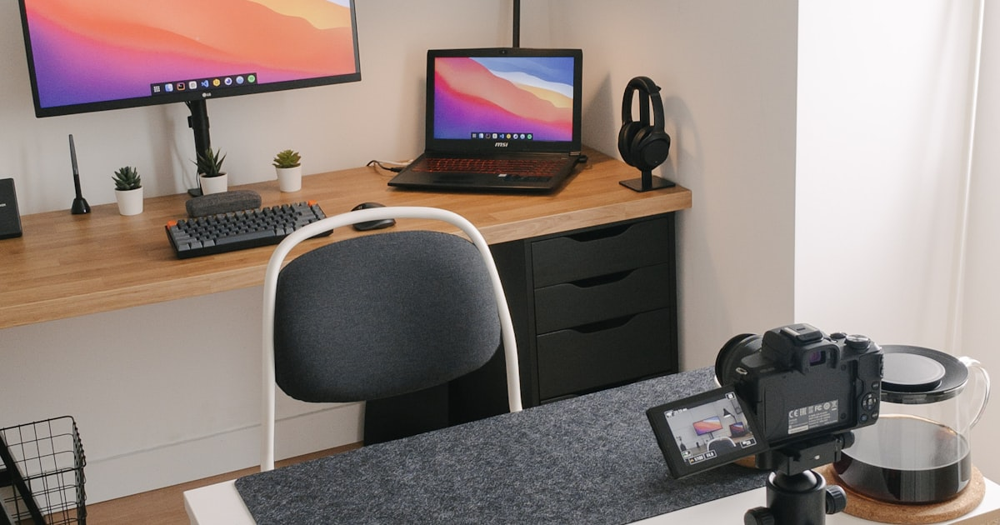

Die beste Beleuchtung für Video-Calls zuhause

Foto: Unsplash
Der Unterschied zwischen "wirkt professionell" und "sieht aus wie im Keller aufgenommen" liegt selten an der Kamera – meistens an der Beleuchtung. Die gute Nachricht: Die Lösung kostet meist unter 40 Euro und ist in wenigen Minuten eingerichtet.
Das Grundproblem: Licht von hinten
Sitzt du mit dem Fenster im Rücken, wird dein Gesicht automatisch dunkel und die Kamera belichtet auf den hellen Hintergrund statt auf dich – ein sogenannter Gegenlicht-Effekt. Die einfachste Lösung kostet nichts: Schreibtisch so drehen, dass das Fenster vor dir oder seitlich von dir liegt, statt hinter dir. Erst wenn das aus Platzgründen nicht geht oder Tageslicht allein nicht reicht, lohnt sich zusätzliches Kunstlicht von vorne.
Ring-Licht mit Stativ
Ein Ring-Licht sorgt für gleichmäßige, schattenfreie Ausleuchtung des Gesichts – der klassische Grund, warum Streamer und Content-Creator damit arbeiten. Für Video-Calls reicht ein kompaktes Modell mit Klemm- oder Tischstativ; die großen Standmodelle mit 45+ cm Durchmesser sind fürs Home-Office meist überdimensioniert. Achte beim Kauf auf stufenlos regelbare Helligkeit und Lichtfarbe sowie einen stabilen Stand oder eine sichere Klemmvorrichtung, damit das Licht nicht bei jeder Bewegung am Tisch verrutscht.
Ring-Lichter mit Stativ bei Amazon ansehen** Affiliate-Link
Die richtige Lichttemperatur
Zu warmes Licht (wie eine klassische Glühbirne, ca. 2700 Kelvin) wirkt auf Kamera oft gelblich und müde, zu kaltes Licht (über 6000 Kelvin) wirkt klinisch und unvorteilhaft für den Teint. Ein neutralweißes Licht im Bereich von ca. 4000–5000 Kelvin liegt bei den meisten Kameras am natürlichsten. Viele Ring-Lichter und LED-Panels lassen sich in dieser Spanne stufenlos einstellen – probiere dich vor dem ersten wichtigen Call kurz durch die Stufen.
Positionierung
Das Licht sollte leicht oberhalb der Kamera und leicht seitlich versetzt stehen – frontal direkt vor dem Gesicht wirkt schnell flach und blendet zusätzlich beim Blick auf den Bildschirm. Ein Abstand von etwa 40–60 cm zum Gesicht ist ein guter Ausgangspunkt; zu nah wirkt hart und überbelichtet, zu weit verpufft der Effekt. Wenn ein zweites Licht verfügbar ist, gleicht es Schatten auf der gegenüberliegenden Gesichtshälfte aus – für die meisten Home-Office- Calls reicht aber eine einzelne, gut positionierte Lichtquelle völlig aus.
Checkliste: Beleuchtung für Video-Calls
- Fenster vor oder seitlich, nicht im Rücken: die kostenlose Basismaßnahme
- Lichtfarbe: neutralweiß, ca. 4000–5000 Kelvin, wenn einstellbar
- Position: leicht oberhalb und seitlich der Kamera, ca. 40–60 cm Abstand
- Stativ/Klemme: stabil genug, damit nichts verrutscht oder wackelt
- Kurzer Test vor wichtigen Calls: eigenes Kamerabild in der Meeting-Software vorab prüfen
Häufige Fragen
Reicht Tageslicht für gute Video-Calls?
An sonnigen Tagen mit Fenster vor dem Gesicht ja. Problematisch wird es bei bedecktem Himmel, im Winter oder abends – dann sackt die Bildqualität spürbar ab und zusätzliches Kunstlicht gleicht das aus.
Muss es ein spezielles Ring-Licht sein oder reicht eine normale Lampe?
Eine helle, neutralweiße Schreibtischlampe funktioniert im Prinzip auch. Ein Ring-Licht ist aber darauf ausgelegt, Schatten im Gesicht gleichmäßig aufzuhellen, und lässt sich meist in Helligkeit und Lichtfarbe stufenlos einstellen – das ist der eigentliche Vorteil.
Welche Lichtfarbe ist für Video-Calls am besten?
Neutralweiß im Bereich von etwa 4000 bis 5000 Kelvin wirkt auf den meisten Kameras am natürlichsten – nicht so gelblich wie warmweißes Licht, nicht so klinisch wie reines Kaltweiß.
Fazit
Für unter 40 Euro und wenige Minuten Einrichtung sieht jeder Video-Call spürbar professioneller aus. Der erste Schritt ist immer kostenlos: Fenster nicht im Rücken haben. Erst danach lohnt sich ein Ring-Licht mit neutralweißer, einstellbarer Lichtfarbe – eine der günstigsten Investitionen für dein Home-Office-Setup, wenn du regelmäßig Calls hast.